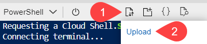

Configure an Azure AD Application for Forensics
To configure Azure Blob Storage as a forensic destination, you must log in to the Azure portal as a subscription owner or global administrator and configure the following tasks:
Step-1: Create an Azure AD Application
To create an Azure AD application, follow the steps below:
Log in to portal.azure.com.
Navigate to All services > Identity > Azure Active Directory.
Click App registrations.

Click + New registration and enter the following details:
Name: Enter the name of the application.
Supported account types: Keep the default selection to Accounts in this organizational directory only.
Redirect URL (optional): Leave this blank.

Click Register.
For additional information, refer to the Microsoft Azure documentation located here.
Step-2: Get the Application ID and Directory ID
After registering the Azure AD application, the page redirects you to the Azure AD application Overview page. Note down the Application (client) ID and Directory (tenant) ID.

Note
These values will be required when you set up the Azure application instance in the Netskope UI.
Step-3: Get the Authentication Key
To get the authentication key, follow the steps below:
On the left navigation bar of the Azure AD application page, click Certificates & secrets.
Under Client secrets, click + New client secret and enter the following details:
Description: Provide a description of the key.
Expires: Set a duration for the key.
Click Add.

After you save the configuration changes, under Client secrets, the right-most column contains the authentication key. Copy the key value.

Important
Ensure that you copy the key value as it is not accessible once you leave this page. The key value will be required when you set up the Azure application instance in the Netskope UI.
For additional information, refer to the Microsoft Azure documentation located here.
Step-4: Assign a Role to the Azure AD Application
To assign a role, follow the steps below:
Log in to portal.azure.com.
Navigate to All services > General > Subscriptions.

On the Subscriptions page, click the appropriate subscription from the list.
Click Access control (IAM).
Click + Add > Add role assignment.

If you intend Netskope to store forensic-related logs in Blob storage, under Roles, assign a Storage Account Contributor role or create a custom role with inbuilt Reader Role with the following permissions.
Microsoft.Storage/storageAccounts/blobServices/containers/write - This permission returns the result of patch blob container.
Microsoft.Storage/storageAccounts/listkeys/action - This permission returns the access keys for the specified storage account.
Microsoft.Storage/storageAccounts/blobServices/write - This permission returns the result of put blob service properties.
Note
You can limit the permissions for the subscription to a storage account after you've setup the subscription instance for forensics in your Netskope tenant. For detailed information, see Limit permissions for Forensics to Azure Storage Account.
The inbuilt Reader Role permission performs the following actions.
Gets an Azure subscription definition within a management group.
Gets information about a role definition.
Lists all the permissions the caller has at a given scope.
Gets the list of storage accounts or gets the properties for the specified storage account.
Gets the list of blob services.
Gets the list of containers.
Reads an eventSubscription.
Gets the list of regional event subscriptions.
Important
If you are configuring a combination of features such as CSA, DLP, Threat Protection, and Forensics in a single instance, then you must create separate custom roles for each feature. For a combination of feature support, assign the roles based on the table below:
Feature/Role
Reader + Custom
Inbuilt Contributor
Storage Account Contributor
DLP
X
X
Threat Protection
X
X
Security Assessment
X
X
Forensic
X
X
X
DLP, Security Assessment
X
X
DLP, Forensic
X
X
Threat Protection, Security Assessment
X
X
Threat Protection, Forensic
X
X
Security Assessment, Forensic
X
X
DLP, Threat Protection, Security Assessment, Forensic
X
X
To create a custom role,
Create a JSON file with the following script and save the file as NetskopeForensics.json.
{ "Name": "custom-forensic-role", "Description": "Forensics", "Actions": ['Microsoft.Storage/storageAccounts/blobServices/containers/write', 'Microsoft.Storage/storageAccounts/listkeys/action', 'Microsoft.Storage/storageAccounts/blobServices/write' ], "DataActions": [], "NotDataActions": [], "AssignableScopes": ["/subscriptions/<customer-subscription-id>"] }To get the <subscription-id>:
Navigate to All services > General > Subscriptions.
Copy the subscription ID and replace the <subscription-id> parameter with the copied ID.
Next, use the Azure PowerShell. Click the Cloud Shell icon on the top-center bar of the Azure portal page.
Note
The shell may prompt you to create and mount a storage account.
On the PowerShell top navigation, select the Upload/Download files icon and then Upload.
Upload the NetskoForensics.json file. Then, on the PowerShell prompt, enter the following command:
New-AzRoleDefinition -InputFile "NetskopeForensics.json"
When you run this command, Azure creates a custom role Netskope Forensics Custom Role with the Microsoft.Storage/storageAccounts/blobServices/containers/write , Microsoft.Storage/storageAccounts/listkeys/action, and Microsoft.Storage/storageAccounts/blobServices/write permissions.
Under Roles, assign the Reader and Netskope Forensics Custom Role.
Note
If you have multiple subscriptions, you can group them under a Management Group and assign the role at the Management Group.
Keep the Assign access to Azure AD user, group, or service principal.
Under Select, search for the newly created Azure AD application and select it.

Click Save.
For additional information, refer to the Microsoft Azure documentation located here.